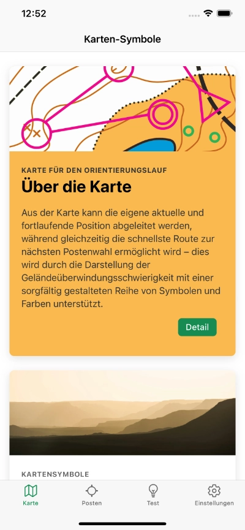
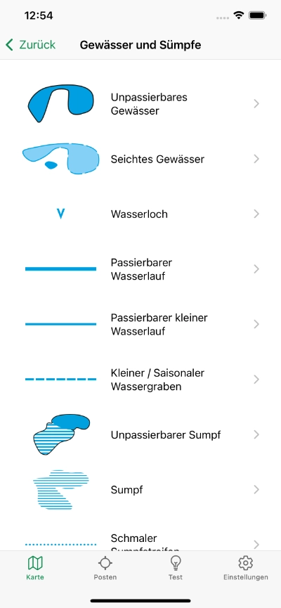
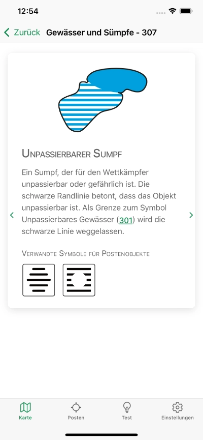
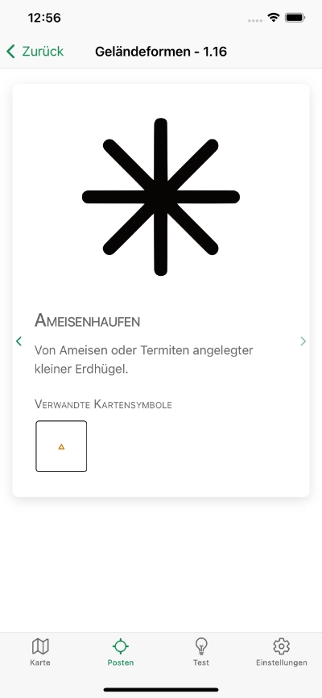
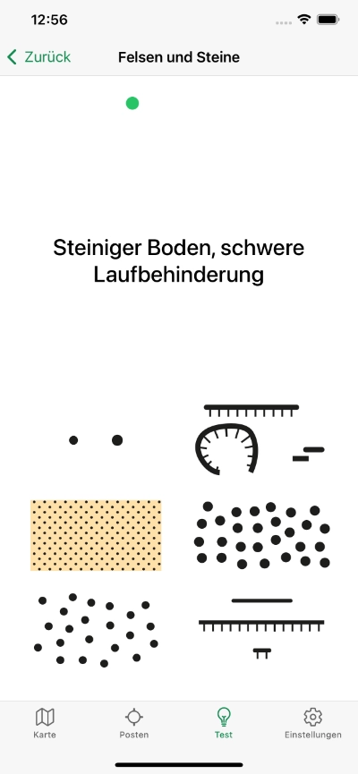
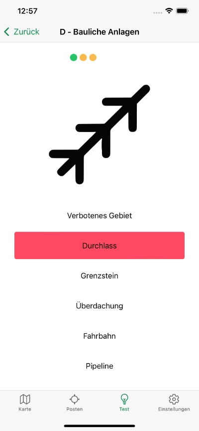
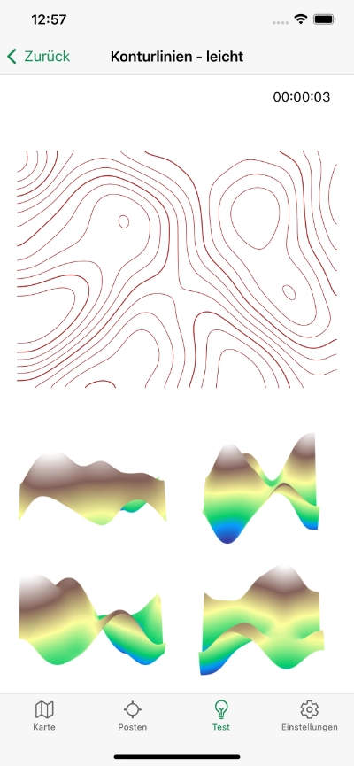
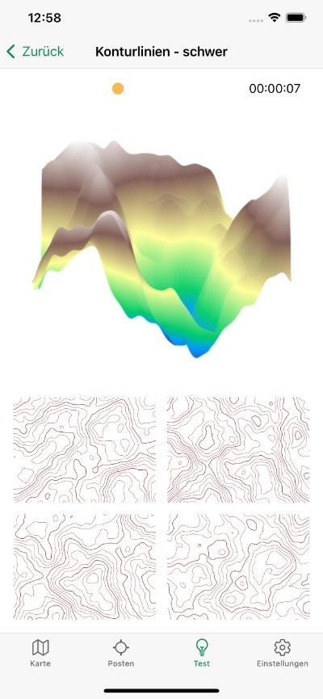

Orisym
Orientieren Sie sich mit Übersicht
Lernen, testen und katalogisieren von Symbolen für Orientierungslauf










Warum Orisym?
- Sie lernen die Bedeutung jedes Symbols für den Orientierungslauf im Detail
- Beim Testen Ihres Wissens erfahren Sie, wie gut Sie sind, und verbessern es
- Im Katalog der Kartensymbole und der Symbole für Kontrollen finden Sie detaillierte Beschreibungen ihrer Bedeutung
- Sie entdecken die Verbindung beider Symboltypen mit ihren Beziehungen
- Sie verbessern Ihre räumliche Orientierung durch das Erkennen von Gelände anhand von Höhenlinien
- Für das Laufen der App wird kein Internet benötigt, sie funktioniert offline